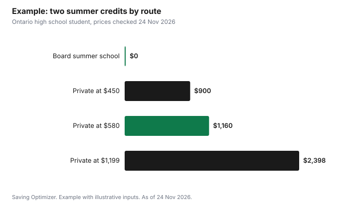

Education · Canada
Summer School and Credit Recovery Costs for High Schoolers

For Ontario high school students, public school board summer school is free, including credit recovery for a course you didn't pass. Private online schools sell summer credits for about $450 to $1,200 per course, and they mostly sell flexibility: start any time, finish fast, or take a course your board doesn't offer in summer. Start with your board's summer program, and pay only if the free option doesn't fit.
Key takeaways
- Board summer school is free for Ontario students and usually runs in July. Registration often opens in spring, through the guidance office.
- Credit recovery lets a student redo only the parts of a failed course they missed, often in a shorter session.
- Private online credits checked on 24 Nov 2026: $450 at Kisomo (summer price, usually $650), $580 at Vaughan College, $1,199 at V3 Preparatory Academy.
- TVO ILC charges $40 per course for most Ontario residents who are not enrolled in a high school. Enrolled students go through guidance.
- Example: two summer credits cost $0 at board summer school or about $900 to $2,400 privately.
Public summer school
Most Ontario school boards run summer school in July for new credits, upgrades and credit recovery. There is no tuition for students who are Ontario residents. Some boards offer it in person, some online, and many offer both. The catch is the schedule: sessions are short and fixed, and popular courses fill up. Ask the guidance office in April or May which courses will run and when registration opens.
Credit recovery is different from repeating a course. A student who failed a course can sometimes recover the credit by completing only the units they did not pass. That is faster and much less work. The home school decides whether a student qualifies.
Private credits
Private online high schools inspected by Ontario's Ministry of Education can grant Ontario credits. On 24 Nov 2026, Kisomo International Collegiate advertised summer credits at $450 instead of its usual $650, Vaughan College listed online self-study credits at $580 per course, and V3 Preparatory Academy listed $1,199 per course with academic support. Those prices change, and some schools charge extra for tutoring, exam proctoring or transcripts.
| Option | Price per course | What you get |
|---|---|---|
| Board summer school | $0 for Ontario students | Fixed July schedule; in person or online |
| TVO ILC | $40 for most residents not enrolled in a high school | Self-paced; proctored final test |
| Kisomo International Collegiate | $450 (summer price; usually $650) | Self-paced online |
| Vaughan College | $580 | Online self-study with an assigned teacher |
| V3 Preparatory Academy | $1,199 | Online with academic support |
Online options
If the student is enrolled in an Ontario high school, TVO ILC courses go through the school's guidance counsellor rather than direct registration, and fees may differ. Private online schools let you enrol directly. Before paying, confirm the school is listed as an inspected private school, how the mark reaches the home school, and whether universities see the course as a repeat or a first attempt. Some universities look closely at grade 12 marks earned privately.
Costs: an example summer
An example Grade 11 student needs two credits over the summer: one to recover and one to get ahead.

At board summer school, both credits cost $0. Privately, two credits cost $900 at a $450 summer price, $1,160 at $580, or $2,398 at $1,199. If the student can only do the recovery credit in July and wants the second in August, mixing a free board course with one private course costs $450 to $1,199.
Choosing
- Ask guidance first. A free board course is the default unless the timing or course list doesn't work.
- For a failed course, ask whether credit recovery is possible. It may take weeks, not months.
- For a private course, check the ministry inspection status, total fees and the refund policy.
- For grade 12 university prerequisites, ask your target universities how they treat private or summer marks.
Sources
- Kisomo International Collegiate, Summer School Credits Online ($450 instead of $650), checked 24 Nov 2026.
- Vaughan College, Online OSSD Credits ($580 per course for online self-study), checked 24 Nov 2026.
- V3 Preparatory Academy, Summer School 2026 ($1,199 per course), checked 24 Nov 2026.
- TVO ILC, Frequently Asked Questions ($40 per course; enrolled students contact guidance), checked 24 Nov 2026.
Frequently asked questions
Is summer school free in Ontario?
Yes, public school board summer school is free for Ontario students, including credit recovery. Ask your guidance office which courses are offered and when registration opens.
How much do private summer credits cost in Ontario?
On 24 Nov 2026, private online schools listed prices from $450 (Kisomo's summer price) to $580 (Vaughan College) and $1,199 (V3 Preparatory Academy) per course. Check what's included.
What is credit recovery?
Credit recovery lets a student who failed a course redo only the units they didn't pass, rather than retaking the whole course. The home school decides who qualifies.
Do universities accept private summer school credits?
Ontario universities accept credits from ministry-inspected private schools, but some look closely at grade 12 marks earned privately. Check with each university you plan to apply to.
Can my child take a TVO ILC course in summer?
Yes, but students enrolled in an Ontario high school register through their guidance counsellor. TVO ILC's $40 fee applies to most residents who register as independent students.
Researched and drafted with AI assistance and fact-checked against official Canadian sources. How we create content.
Note: Private school prices change. Confirm with the school and your board's guidance office. Education only.